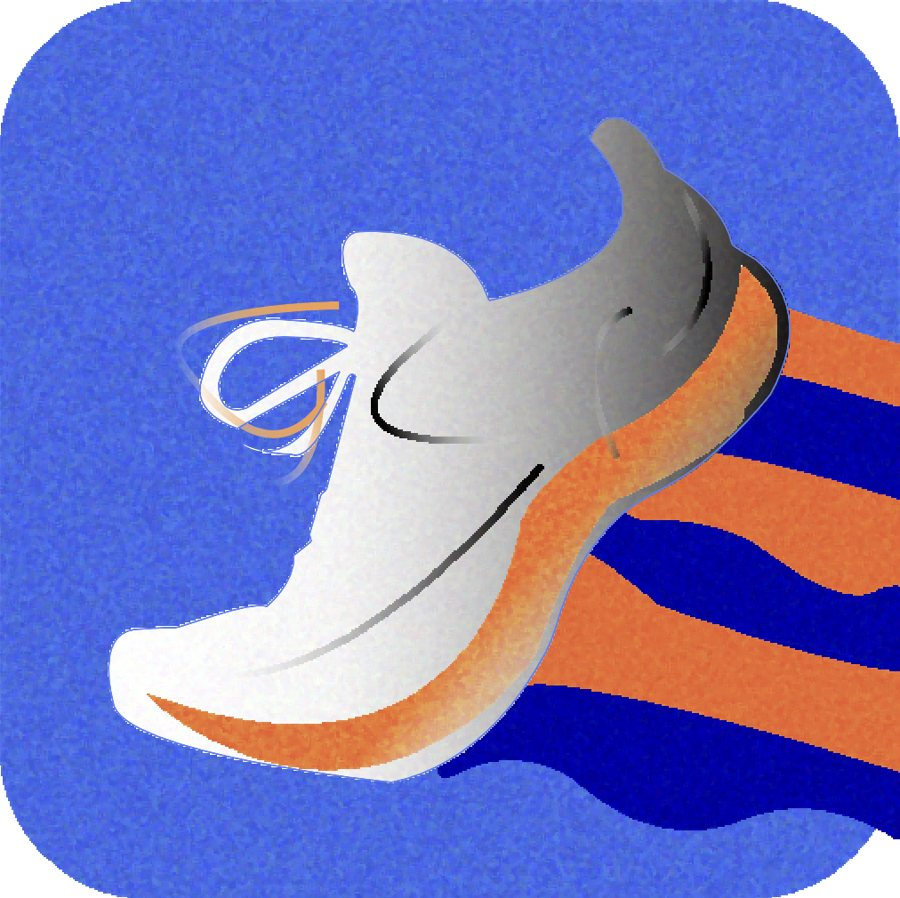

Portfolio
Hong Ju Jin
Interactive UX Developer · Student at the University of Illinois Urbana-Champaign
I design and build interfaces that start from people: their emotions, needs, and frustrations. My work moves between UX research, interactive prototypes, front-end code, and 3D visualization, and lately I've been exploring how cultural objects become data once they're digitized and put online.
What I focus on
UI/UX Design
Research-driven interfaces that solve real human problems, from first sketch to clickable Figma prototype.
Human-Centered Design
Empathy and clarity first: user research and iterative testing so each interaction feels simple and intuitive.
3D & Interactive Media
3D modeling, motion, and creative coding (p5.js) to make ideas and data persuasive and explorable.
“The next big thing is the one that makes the last big thing usable.” Blake Ross, co-creator of Mozilla Firefox
Selected work
Projects
All repositories on GitHub →
Nyam
An AI-powered snack subscription that recommends treats based on your mood, stress level, and taste.
Case study →
Swift Pulse
A running app that pairs GPS tracking and live biometrics with adaptive coaching that adjusts to your progress.
Case study →
Paris Olympic Data Visualization
A playable, side-scrolling data story about the Paris Olympics, built with p5.js and custom illustrations.
Project details →Greenhouse
A 3D modeling project that visualizes the effects of climate change across different ecosystems.
Project details →
The Starry Night: A Digital Object
A study of Van Gogh's painting at MoMA: its metadata, its history, and what's lost when a canvas becomes a JPEG.
View page →IS 310 Coding Assignments
Coursework for Culture as Data at UIUC: command-line, Git, Python, and web fundamentals.
GitHub repo ↗Background
Experience
Education, coursework, and project work. For a full résumé, connect with me on LinkedIn.
-
Fall 2026
IS 310: Culture as Data
University of Illinois Urbana-Champaign- Building a digital object study of The Starry Night in HTML/CSS/JS, hosted on GitHub Pages.
- Learning Git, the command line, and Python for working with cultural data.
-
Fall 2024
Designer & Developer: Paris Olympic Data Visualization
Personal / course project- Drew original illustrations and animated a sprite-based character in p5.js.
- Turned Olympic data into an explorable, keyboard-driven scene.
-
2024
UX Designer: Nyam & Swift Pulse
UX design projects- Ran user surveys and designed an emotion-based recommendation flow for a snack subscription service.
- Designed a running app with real-time biometric feedback and adaptive training plans.
- Built high-fidelity, clickable prototypes in Figma.
-
Spring 2024
ARTD 218: Art & Design coursework
University of Illinois Urbana-Champaign- Designed and coded my first portfolio site, including a 3D climate-change visualization (Greenhouse).
Get in touch
Let's work together
I'm open to internships, research, and collaborative design projects. The best way to reach me is email or LinkedIn.